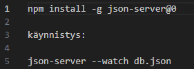
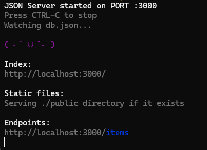
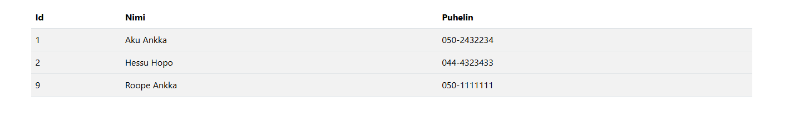
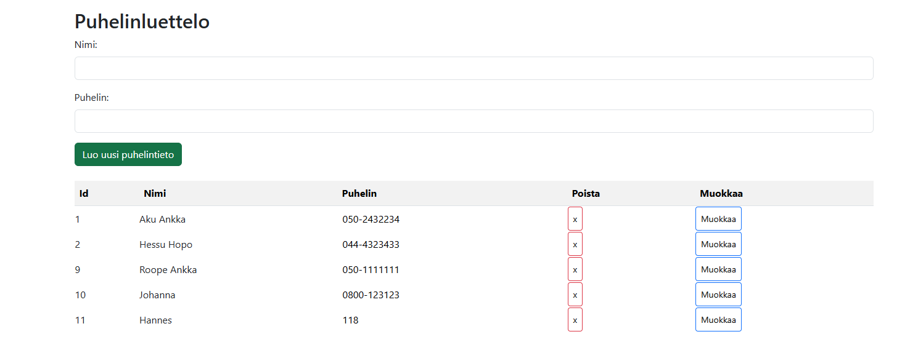
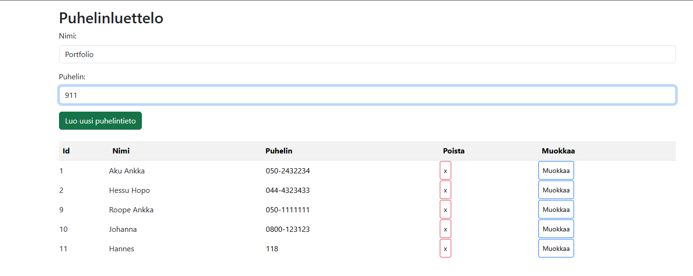
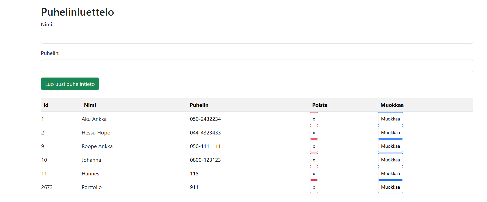
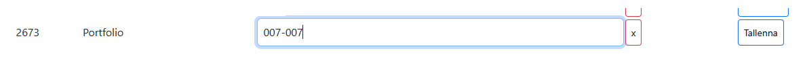
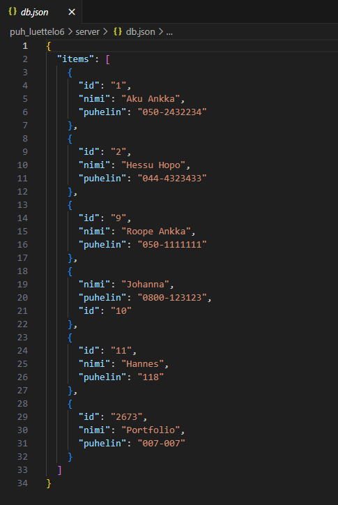
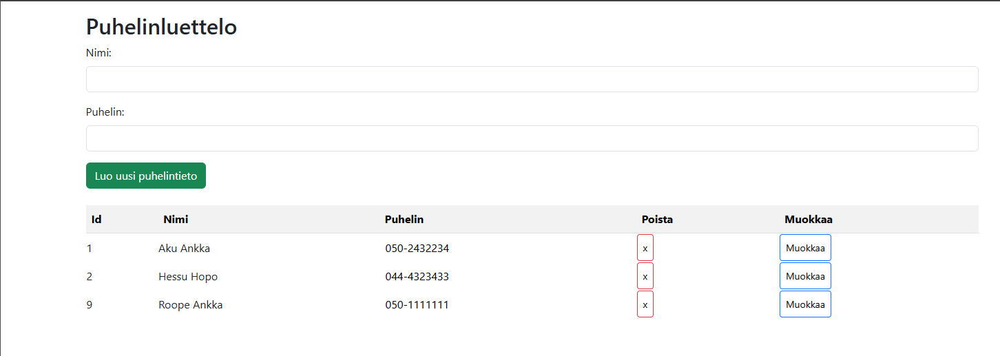
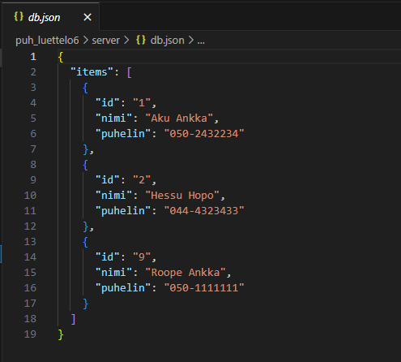

Kuva 1: Ohjelma vaatii JSON-serverin asennuksen toimiakseen oikein

Kuva 2: Asennuksen jälkeen serveri käynnistetään.

Kuva 3: index.html perusnäkymä selaimessa

Kuva 4: Puhelinluettelon näkymä selaimessa muutaman tiedon lisäyksen jälkeen.

Kuva 5: Ylempiin laatikoihin voi kirjoittaa uusia tietoja, jonka jälkeen "Luo uusi puhelintieto"- nappula tallentaa tiedot tietokantaan.

Kuva 6: Tiedot tallentuivat tietokantaan ja näkyvät välittömästi selainnäkymässä.

Kuva 7: "Muokkaa"- nappulaa painamalla numerokenttää pystyy muokkaamaan ja numeron voi vaihtaa.

Kuva 8: "Tallenna"- nappula tallentaa muutoksen myös tietokantaan.

Kuva 9: "Poista"- nappulaa painamalla rivin saa poistettua ja tieto häviää näkymästä välittömästi.

Kuva 10: Poistetut tiedot häviävät välittömästi myös tietokannasta.